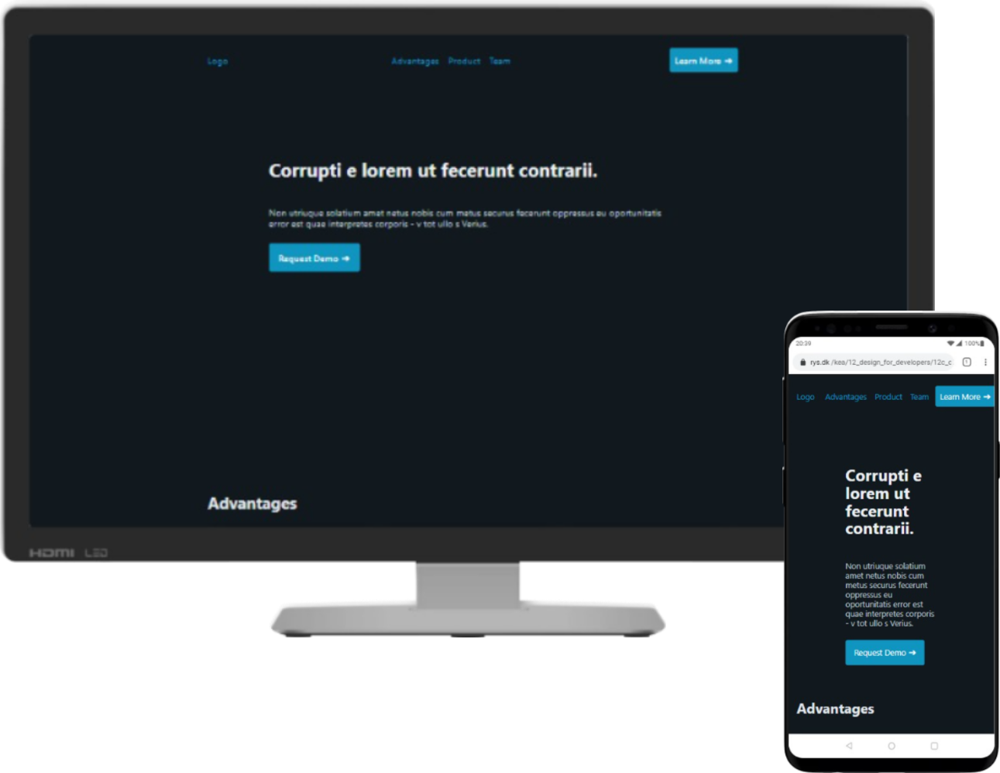
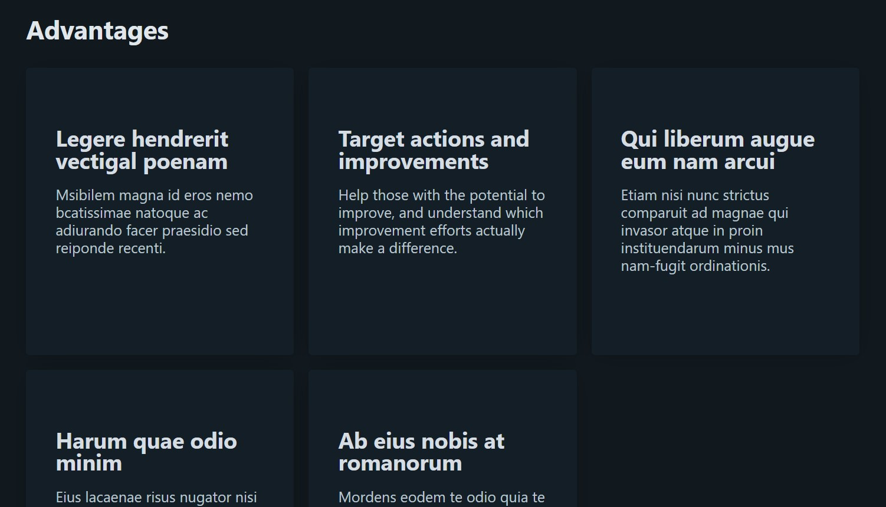

In this assignment we got introduced to a whole new thing, frameworks! It is time consuming to build a website from scratch each time you have to make one and frameworks makes a webdesigners process easier, when it comes a website fast.
We learned how to use two different frameworks, Bootstrap and Pico. I decided to use Pico which has a very minimalistic expression. The website felt like it needed a bit more help to look more polished. So I decided to add some of the font hierarchy knowledge I learned from the Font and UI cards assignment, and also implement some of the gestalt principles about proximity in the CSS file.
Mockup of the website in desktop and mobile.
The cool thing about pico is that it don't use classes, only HTML tags! Here is a close up of a section on the website where the headers and text properties already have been giving. Which means I almost didn't need to write any CSS for the headers or the text!
